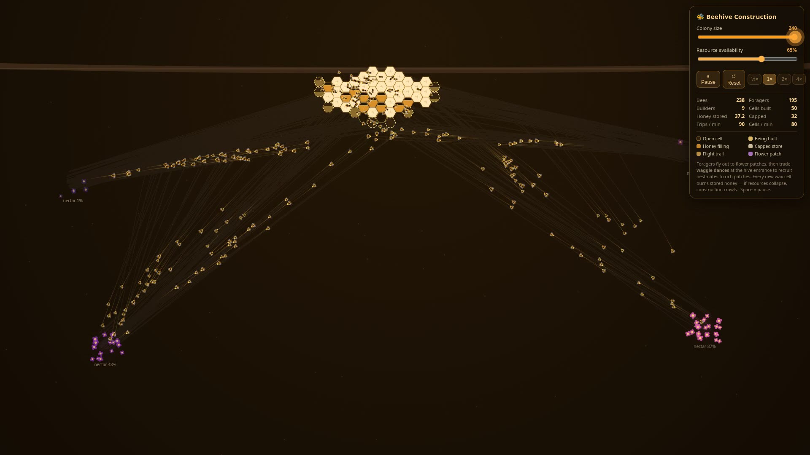

▶
1:44
AI-agent · 3D-simulatie
Beehive — de bijenkolonie
Dezelfde prompt die ooit naar GPT-5.2 ging, hier lokaal gebouwd: honingraat, waggle-dances en nectar-trails — het model debugde zichzelf. Gemeten: 23,8 min, 8,77M tokens (99% cache).